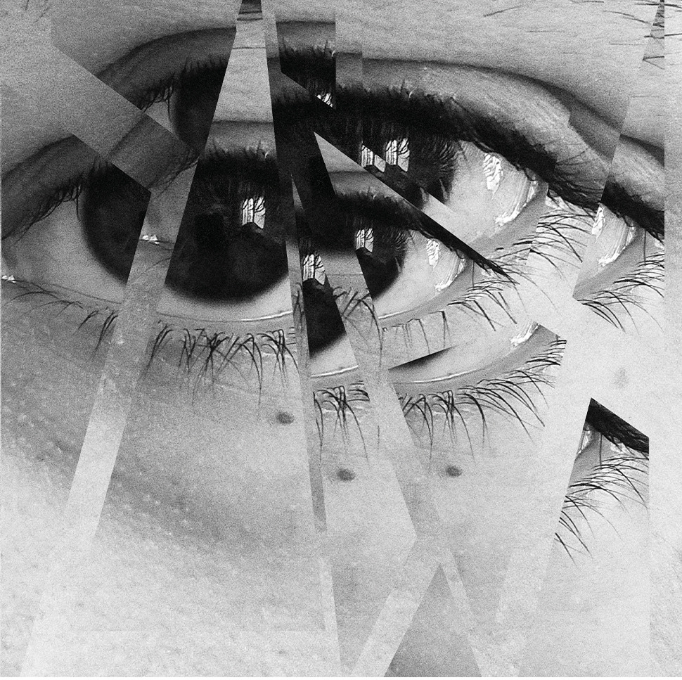
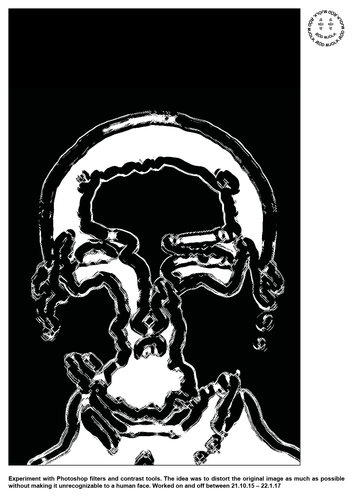

Opaque plastic bag
Experiemnting with Blender simulations and mobile view dimentions
Overflow
Experiemnting with After Effects mobile view dimentions
Walk pt.3
Experiemnting with After Effects mobile view dimentions

Museum Archives
Poster design exeperiementing from Sinebrychoff Art Museum archives, which is part of the larger Finnish National Gallery

Untitled photo collage
Photography collage made from close up shot from my own eye
For A2B2
Short beat made entirely out of the samples from A2B2's Gloomy Sample Pack, and it inspired me to create these motion graphics to go along with it.

Filters and contrast tools
The idea was to distort the original image as much as possible without making it unrecognizable to a human face.
Joy From Peace
Addition for A SHORT GLIMPSE OF JOY series
Live @ Merikerho
Clip from my VJ set at Merikerho. Original paintings sourced from The Finnish National Gallery.
Live @ Aavistus Festival
Clip from my VJ set at the Aavistus festival. Aavistus is a biennial of audiovisual art & VJ culture, that was held 6.-9.10.2022 in Helsinki.
Live @ Vapaan Taiteen Tila
Exenakis Gauzes live performance at the first edition of ATELO, that was held in Vapaan Taiteen Tila
Noise field_1
Edited clip from Perlin noise experiments made with p5js. In this experiment I used two different images to visualise Perlin noise in action.